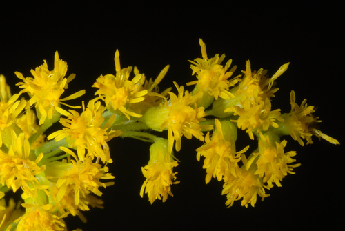
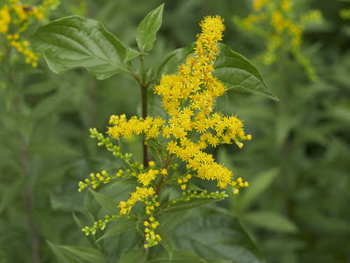
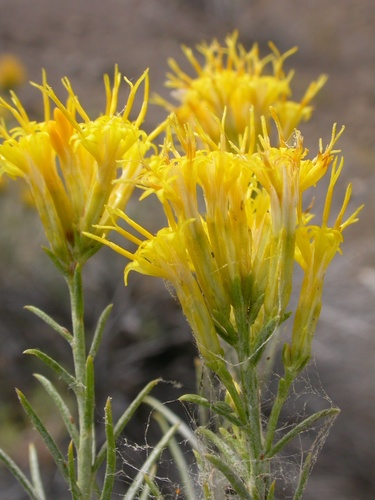
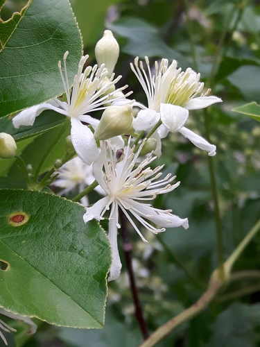

Halictus farinosus
Halictus farinosus native bee
Sweat bees, widespread across the prairies.
20 documented plant relationships.
sips nectar at
 Leslie Seaton, some rights reserved (CC BY)") BalsamrootBalsamorhiza sagittata
BalsamrootBalsamorhiza sagittata
Canada GoldenrodSolidago canadensis Douglas Goldman, some rights reserved (CC BY-SA), uploaded by Douglas Goldman") ChokecherryPrunus virginiana
ChokecherryPrunus virginiana KENPEI, some rights reserved (CC BY)") Common SunflowerHelianthus annuusElegant GoldenrodSolidago lepida
Common SunflowerHelianthus annuusElegant GoldenrodSolidago lepida Douglas Goldman, some rights reserved (CC BY-SA), uploaded by Douglas Goldman") FireweedChamaenerion angustifolium
FireweedChamaenerion angustifolium Douglas Goldman, some rights reserved (CC BY-SA), uploaded by Douglas Goldman") Flat-topped GoldenrodEuthamia graminifoliaGumweedGrindelia squarrosa
Flat-topped GoldenrodEuthamia graminifoliaGumweedGrindelia squarrosa Tom Norton, some rights reserved (CC BY), uploaded by Tom Norton") Highbush CranberryViburnum opulus
Highbush CranberryViburnum opulus
Late GoldenrodSolidago giganteaPrairie GoldenrodSolidago missouriensis
RabbitbrushEricameria nauseosa Fluff Berger, some rights reserved (CC BY-SA), uploaded by Fluff Berger") Showy FleabaneErigeron speciosus
Showy FleabaneErigeron speciosus Slender Cinquefoil (Graceful Cinquefoil)Potentilla gracilisUmbrella BuckwheatEriogonum umbellatum
Slender Cinquefoil (Graceful Cinquefoil)Potentilla gracilisUmbrella BuckwheatEriogonum umbellatum
Wild ClematisClematis ligusticifolia Douglas Goldman, some rights reserved (CC BY-SA), uploaded by Douglas Goldman") YarrowAchillea millefolium
YarrowAchillea millefolium Matt Lavin, some rights reserved (CC BY-SA)") Yellow PucoonLithospermum ruderale
Yellow PucoonLithospermum ruderale